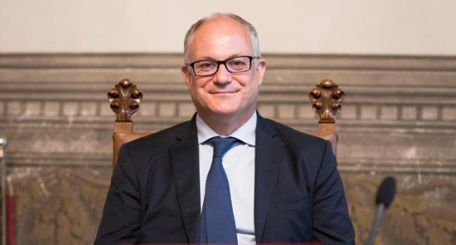

Roberto Gualtieri è un politico, storico e accademico italiano, dal 5 settembre 2019 Ministro dell'economia e delle finanze del Governo Conte II.
Dal 7 giugno 2009 al 5 settembre 2019 è stato deputato europeo del Partito Democratico. Nel luglio 2014, è stato eletto Presidente della Commissione per i problemi economici e monetari al Parlamento Europeo.
È professore associato di Storia contemporanea all'Università degli Studi di Roma "La Sapienza" ed è vicedirettore della Fondazione Istituto Gramsci. È autore di numerosi libri ed articoli sulla storia italiana e internazionale del XX secolo e sul processo di integrazione europea. Collabora a diversi quotidiani e riviste, ha diretto il Rapporto annuale sull'integrazione europea per l'editore Il Mulino.
Membro della segreteria romana dei Democratici di Sinistra tra il 2001 e il 2006, nell'ottobre 2006 è stato uno dei tre relatori del convegno di Orvieto che ha dato il via alla costruzione del nuovo partito e ha successivamente fatto parte della commissione di "saggi" nominata da Romano Prodi che ha redatto il "Manifesto" per il Partito democratico.
Nel 2007 viene eletto all'Assemblea nazionale del Partito Democratico, nel 2008 entra a far parte della Direzione nazionale, dove è stato rieletto nel gennaio 2014.
Nel settembre 2019 è nominato Ministro dell'Economia con il governo Conte II.
Nella primavera del 2009 è stato eletto deputato europeo per il PD nella circoscrizione Italia Centrale. Nel luglio 2009 è stato nominato titolare della Commissione per gli Affari Costituzionali (AFCO), e della Sottocommissione per la Sicurezza e la Difesa (SEDE), in cui ha ricoperto l'incarico di coordinatore per il Gruppo dei Socialisti e Democratici; membro sostituto della Commissione per gli Affari Esteri (AFET) e della Commissione per i Bilanci (BUDG), in cui ha ricoperto l'incarico di relatore permanente per il bilancio sulla PESC.
A seguito della sua rielezione a deputato europeo, il 7 luglio 2014 è stato eletto Presidente della Commissione per i problemi economici e monetari.
Relatore di numerosi provvedimenti, tra cui la relazione annuale sull'Unione bancaria, vari regolamenti sulle statistiche, le nomine ai vertici di Bce, Srb, Eba, Esma, Eiopa, Efsi, gli Npl e il nuovo programma InvestEu, è molto impegnato nel coordinamento dell'attività della Commissione Econ nell’ambito della regolamentazione dei mercati finanziari presiedendo tutti i triloghi legislativi.